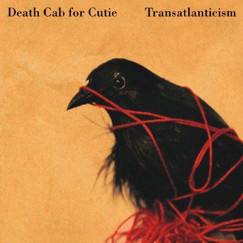

Death Cab For Cutie - Transatlanticism

Transatlanticism is widely considered Death Cab For Cutie's magnum opus. It's Death Cab's fourth studio album of seven, but probably the first album that comes to someone's mind when they talk about the band. "Sound of Settling," which frontman Ben Gibbard originally didn't want to include on the album, has become one of Death Cab's biggest hits. The rough concept album about distance and its effect on relationships is beloved by critics, teenagers, and music enthusiasts alike, and is considered an instant classic.
Transatlanticism begins with "The New Year," which describes Dismemberment-Plan-style disillusionment with new year's festivities. It sets the tone nicely for what will follow, as does "Lightness," which flows nicely into the standout "Title and Registration."
The song starts with Gibbard cleverly proposing a change of the name "glove compartment," because the only things inside are disappointment and regret. The drum sound here is instantly memorable, and drives Gibbard's voice and the equally distinctive riff forward, a common musical theme across Transatlanticism.
"Expo '86" artfully turns an innocent, pleasant riff into a symbol of grating repetition, all while maintaining its saccharine facade. Lead single "Sound of Settling" is Death Cab at their catchiest, matched only by Plans single "Crooked Teeth." It doesn't fit perfectly with the rest of these songs, but it serves its purpose as a nice introductory point to the band and acts as an upbeat catharsis of sorts before the harder-hitting second half of the album takes over.
The rest of the album provides some of the strongest tracks, revolving around the titular centerpiece, a beautiful seven-minute treatise against distance and a plea for closeness. By the time "A Lack of Color" comes on, you, like Gibbard, know it's over but don't want it to end.
Narrow Stairs was always my favorite Death Cab album until I read along while listening through this. I still maintain the (unpopular) opinion that Narrow Stairs is Death Cab's most instrumentally interesting work, but Gibbard's lyrics on this album push it above and beyond any of the band's efforts since.
Transatlanticism is by no means an uplifting album, but it doesn't force gloom upon you. Instead, the album sinks inside you, until you come to feel what Death Cab want you to feel. Gibbard doesn't attempt to hide his true meaning in complex wordplay--in fact, he's quite happy to spell out what he's experiencing. He does so artfully however, coming across as earnest instead of inane.
Once you really listen to this album, you begin to know it like a friend. It's shy at first, but once you strike up a conversation with it, and it tells you all it knows about young love and separation, you don't want to stop talking. Transatlanticism truly is Death Cab For Cutie at their best. With warm guitar melodies, distinctive drumming, and lyrics that will be scrawled in notebook margins for years to come, it definitely deserves your time.
Artist: Death Cab For Cutie
Album: Transatlanticism
Score: 4.5
Label: Barsuk
Release: 2003/10/07